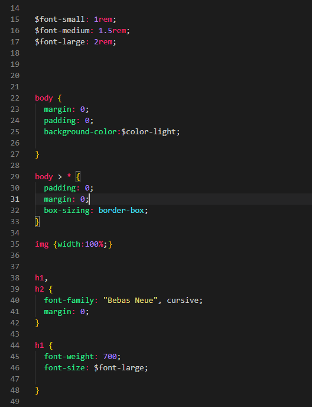

Web

Läser front-end utveckling. Html, css och javascript. Läs mer om min process här
Läser front-end utveckling. Html, css och javascript. Läs mer om min process här

Har nog flest antal timmar i Photoshop, men arbetat mycket ineffektivt. ett rejält hopp gjordes när jag läste Grafisk Design och också skaffade the adobe suite, och gick från Photoshop CS3 till Photoshop 2020. Den här bilden är gjord med hjälp av Photoshop och lite Cinema 4D. Läs mer om hur den här bilden blev till här
En liten film gjord med Illustrator och After Effects. Det är inte mycket. Men i sakta mak. Läs mer om processen här